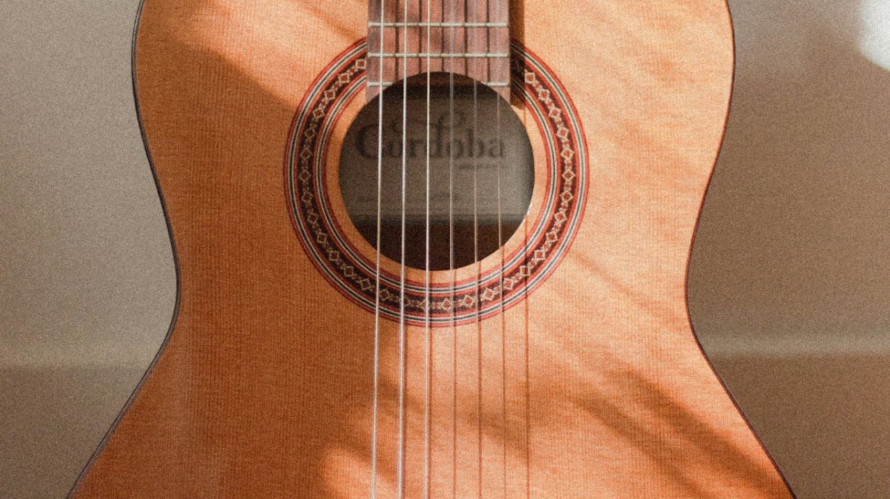
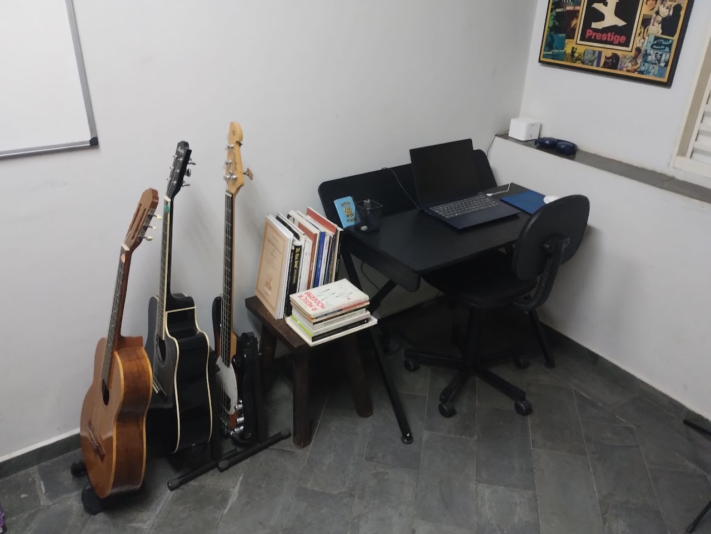
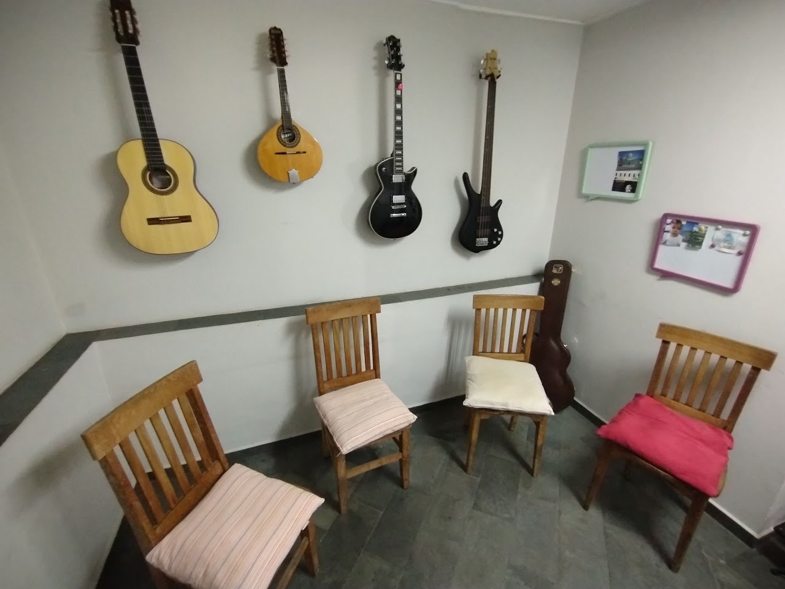
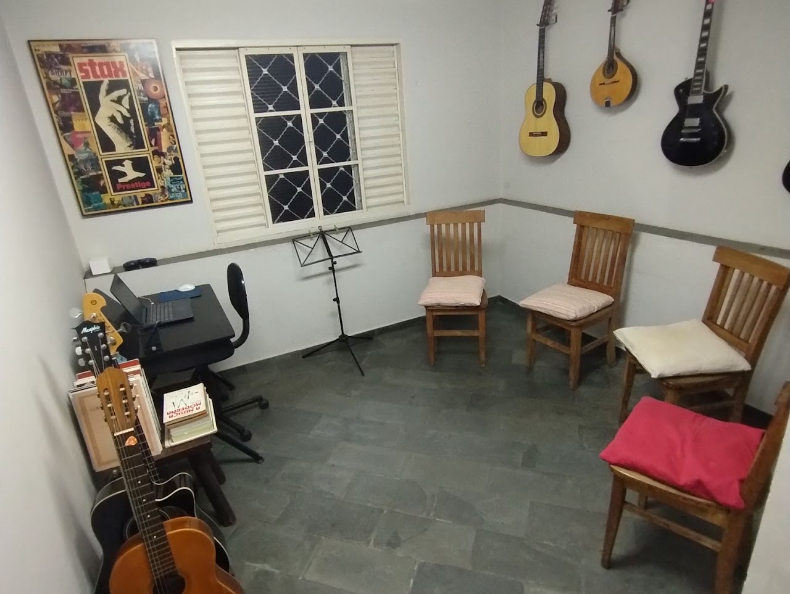
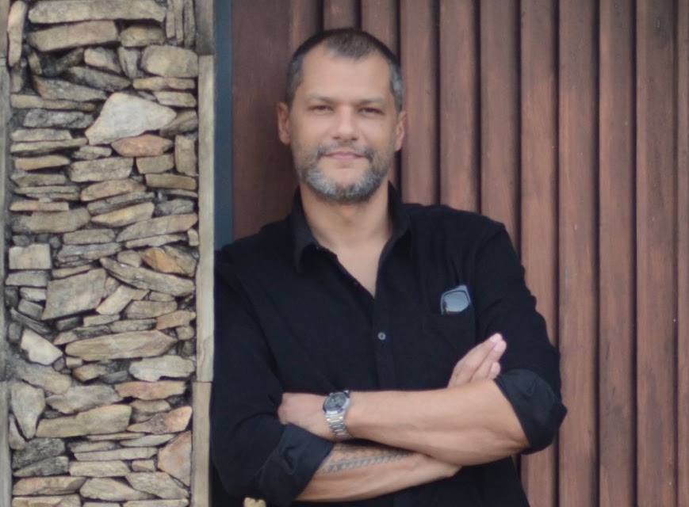

Aulas de Violão e Guitarra com Formação Acadêmica & Prática
THIAGO PAZ
Aprenda a tocar as músicas que você gosta, com aulas 100% individuais, didática clara e um ensino pensado exclusivamente para o seu nível e seus objetivos.
Estúdio Particular no Mangal, Sorocaba ou Online ao Vivo
MODALIDADES & VAGAS
Aulas individuais personalizadas para crianças, jovens e adultos, do zero absoluto ao aperfeiçoamento técnico.
01 • VIOLÃO
Popular & Clássico
Estúdio Mangal / Online
Popular ou clássico, do primeiro acorde ao desenvolvimento de técnica, levadas rítmicas (Bossa, MPB, Pop, Rock), fingerstyle, postura e repertório.
02 • GUITARRA
Rock, Blues & Solos
Estúdio Mangal / Online
Rock, riffs lendários, acordes abertos e com pestana, técnica de palhetada, bends expressivos, escalas pentatônicas e improvisação musical.
03 • CONTRABAIXO
Groove & Condução
Estúdio Mangal / Online
O coração rítmico e harmônico. Técnicas de digitação, slap, linhas de baixo marcantes, percepção de pulso e entrosamento com a bateria.
04 • BANDOLIM
Choro & Teoria Prática
Estúdio Mangal / Online
Palhetada veloz, riqueza do Choro e MPB tradicional, além de aulas dedicadas de Teoria Musical, harmonia funcional e leitura descomplicada.
COMO FUNCIONA O MÉTODO THIAGO PAZ

Clique para ouvir timbres sintetizados em tempo real:
* Recursos sonoros gerados com Web Audio API diretamente pelo navegador, sem downloads.
DIDÁTICA CLARA, SEM ENROLAÇÃO & NO SEU RITMO
Formado em Composição e Regência, Thiago Paz desenvolveu uma metodologia que une a sólida bagagem acadêmica àquilo que realmente faz você querer tocar: suas bandas favoritas, seus objetivos pessoais e a prática prazerosa do instrumento desde a primeira aula.
Repertório Guiado pelo seu Gosto
Você escolhe o que quer tocar. Do Rock clássico e Blues à Bossa Nova e MPB, os conceitos teóricos são introduzidos através das músicas que você gosta.
Aulas 100% Individuais e Atenciosas
Sem método engessado em turma. Atenção exclusiva para corrigir postura, digitação, palhetada e ritmo, acelerando seu aprendizado com total segurança.
Estrutura Completa no Mangal ou Online
Estúdio particular silencioso, climatizado e equipado com instrumentos de qualidade. E para quem estuda online, transmissão com áudio digital cristalino.
O QUE VOCÊ QUER TOCAR?
O conteúdo é adaptado ao seu nível, seus objetivos e ao repertório que move sua paixão.



TEM UM SONHO DE TOCAR UMA MÚSICA ESPECÍFICA?
Traga o nome da música que você sempre sonhou em tocar. Na primeira aula nós já tiramos os primeiros acordes e montamos seu plano passo a passo!
O QUE OS ALUNOS DIZEM
Depoimentos reais de quem aprendeu na prática com método claro e paciência.
“Professor nota 10. Didática muito boa e ensina com paciência. Estou gostando muito das aulas de violão.”
Emanoel Deus
Avaliação verificada no Google
“Excelente professor, aulas descontraídas e proveitosas. Na primeira já estava tocando uma música que considerava difícil.”
Gabriel Figueroa
Avaliação verificada no Google
“Professor excelente! Meu filho estuda violão e guitarra tanto presencialmente como on-line. Gosta muito! Inclusive, em tão pouco tempo já se sente seguro para tocar em público. Super indico!”
Juliana de Farias Fazzane
Mãe de aluno • Sorocaba
O ESTÚDIO NO MANGAL
Ambiente tranquilo, climatizado e preparado especialmente para aulas individuais em Sorocaba. Clique nas fotos para ampliar.
* Você não tem instrumento próprio ainda? No estúdio você tem violão e guitarra profissionais regulados para usar durante as aulas!

TRADIÇÃO ACADÊMICA, PAIXÃO NA MÚSICA.
Prazer, sou o Thiago Paz
Sou músico e professor de música, formado em Composição e Regência, com mais de uma década de experiência no ensino de alunos de diferentes idades e níveis em Sorocaba e região.
Acredito que aprender música não precisa ser um processo rígido ou engessado. Minhas aulas são individuais e planejadas a partir dos objetivos e interesses de cada aluno.
“Gosto de unir uma didática clara e organizada àquilo que faz a pessoa querer tocar: suas músicas, seus desafios e sua própria relação com o instrumento.”
ONDE FICAM AS AULAS?
No Mangal, em Sorocaba, próximo ao Hospital Evangélico e em frente a duas escolas — uma localização especialmente prática para alunos e famílias da região.
Bairro Mangal, Sorocaba - SP
Ponto nobre e central com facilidade de chegada pela Av. General Carneiro, Av. Washington Luiz e Centro de Sorocaba.
- ✓ Próximo ao Hospital Evangélico de Sorocaba
- ✓ Em frente a duas conceituadas escolas
- ✓ Rua tranquila com facilidade de estacionamento
- ✓ Ambiente seguro e protegido para pais e filhos
QUE TAL EXPERIMENTAR UMA AULA?
A aula experimental é gratuita. Você conhece o espaço, conversamos sobre seus objetivos e definimos juntos o melhor caminho para começar ou continuar seus estudos.
AULA EXPERIMENTAL SEM CUSTO
Você não precisa assumir mensalidades antecipadas para conhecer o método. Venha bater um papo, experimentar nossos violões e guitarras e tirar qualquer dúvida com o Thiago.
RESERVE SEU HORÁRIO EXPERIMENTAL
Preencha os campos abaixo para abrir a conversa no WhatsApp com os detalhes já configurados: